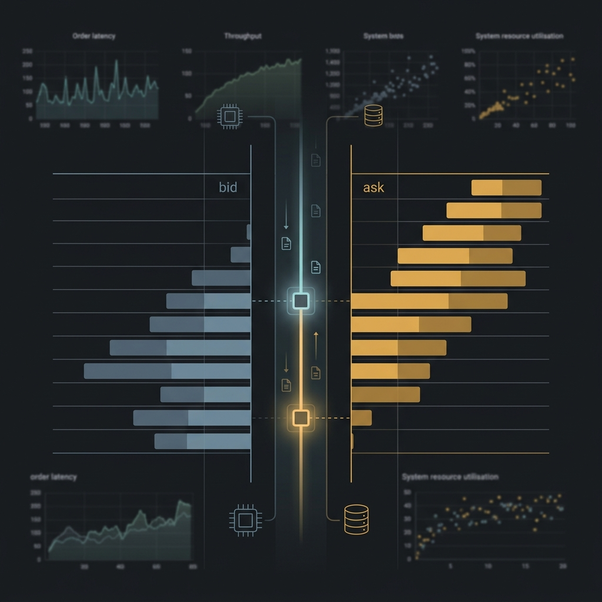

Limit Order Book
Matching Engine
Go + C++ hot-path matching engine with full OpenTelemetry / Prometheus instrumentation.
// hot path — C++ order matching
func (e *Engine) Match(order Order) []Trade {
// instrument with otel span
span := tracer.Start(ctx, "engine.match")
defer span.End()
return cgo.Match(e.book, order)
}
Problem
No open reference LOB engine with observability built-in from day one
Approach
Go orchestration layer + C++ price-time priority hot path via cgo; OTel spans + Prometheus metrics throughout
Outcome
Sub-microsecond match latency target; full observability for latency profiling